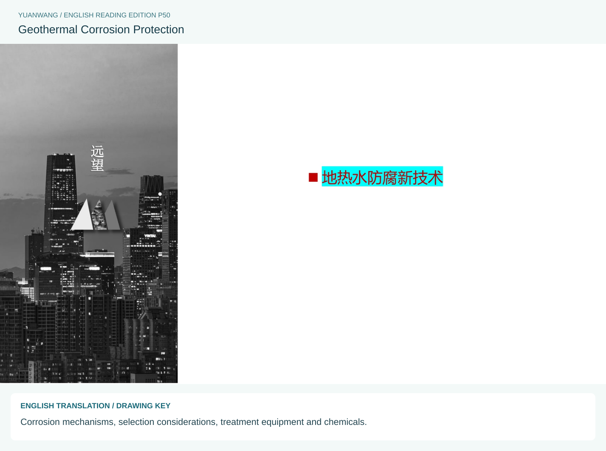
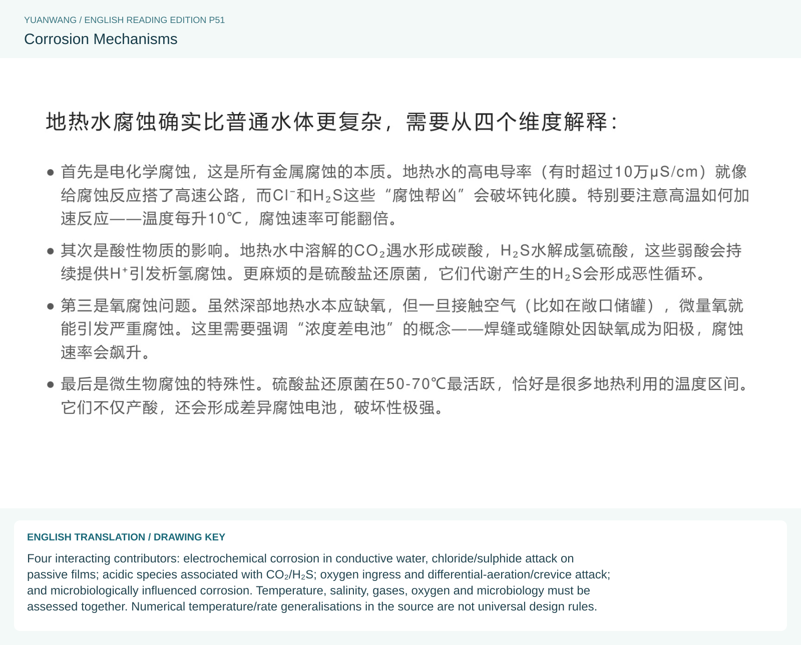
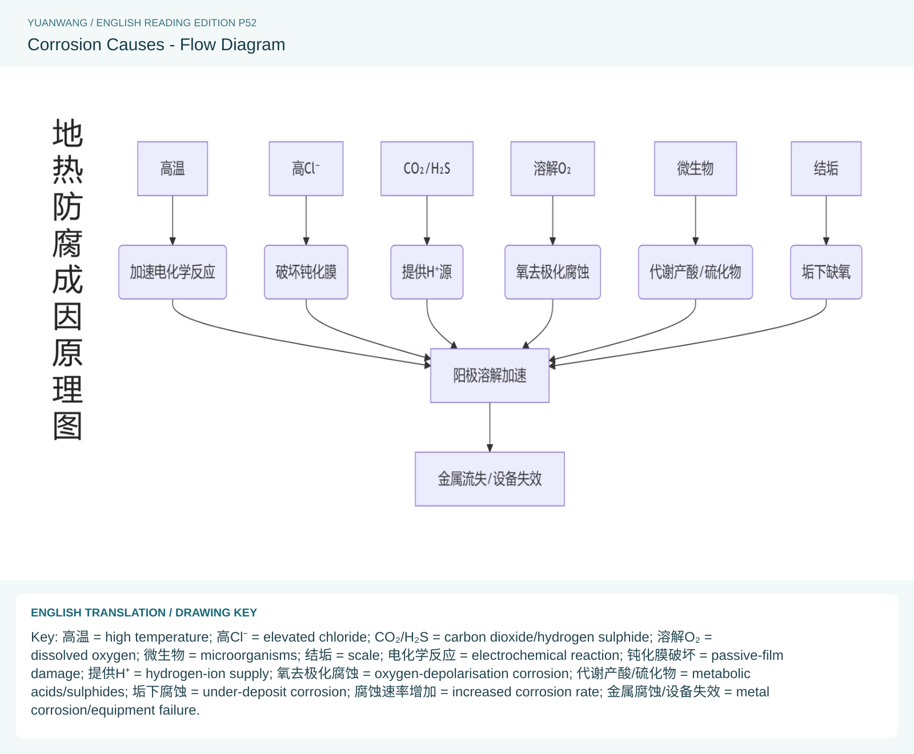
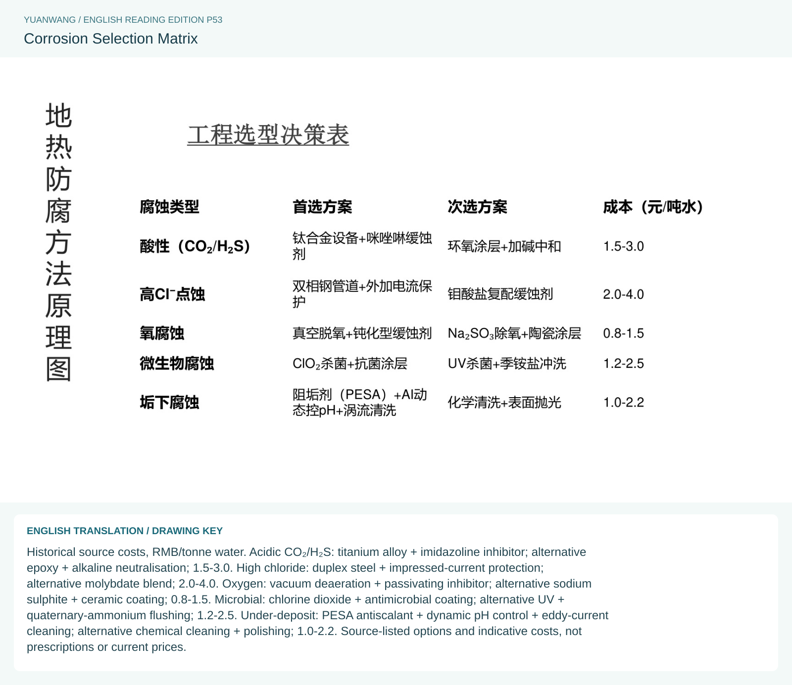
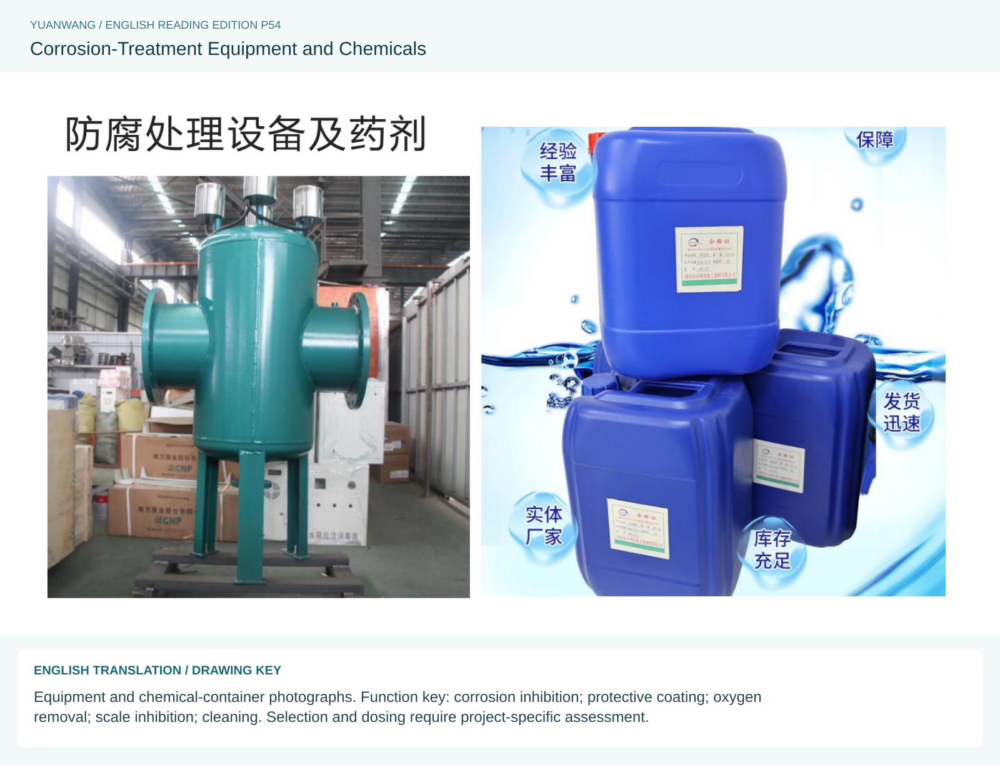

← Geothermal overview Company, team & credentials Cascade heat utilisation Single-well systems & fracturing Scale control Corrosion protection Tailwater reinjection Geothermal power generation Facilities & field references YUANWANG · WATER & WELLNESS
Corrosion protection English reading edition of source pages 50-54. Original reference plates are preserved with English explanations and drawing keys.
50 · Geothermal Corrosion Protection 51 · Corrosion Mechanisms 52 · Corrosion Causes - Flow Diagram 53 · Corrosion Selection Matrix 54 · Corrosion-Treatment Equipment and Chemicals SOURCE PAGE 50 / 78
Geothermal Corrosion Protection Corrosion mechanisms, selection considerations, treatment equipment and chemicals.
View bilingual source plate and English drawing key 
Select the plate to view the full-resolution reference.
SOURCE PAGE 51 / 78
Corrosion Mechanisms Four interacting contributors: electrochemical corrosion in conductive water, chloride/sulphide attack on passive films; acidic species associated with CO₂/H₂S; oxygen ingress and differential-aeration/crevice attack; and microbiologically influenced corrosion. Temperature, salinity, gases, oxygen and microbiology must be assessed together. Numerical temperature/rate generalisations in the source are not universal design rules.
View bilingual source plate and English drawing key 
Select the plate to view the full-resolution reference.
SOURCE PAGE 52 / 78
Corrosion Causes - Flow Diagram Key:high temperature;elevated chloride; CO₂/H₂S = carbon dioxide/hydrogen sulphide;dissolved oxygen;microorganisms;scale;electrochemical reaction;passive-film damage;hydrogen-ion supply;oxygen-depolarisation corrosion;metabolic acids/sulphides;under-deposit corrosion;increased corrosion rate;metal corrosion/equipment failure.
View bilingual source plate and English drawing key 
Select the plate to view the full-resolution reference.
SOURCE PAGE 53 / 78
Corrosion Selection Matrix Historical source costs, RMB/tonne water. Acidic CO₂/H₂S: titanium alloy + imidazoline inhibitor; alternative epoxy + alkaline neutralisation; 1.5-3.0. High chloride: duplex steel + impressed-current protection; alternative molybdate blend; 2.0-4.0. Oxygen: vacuum deaeration + passivating inhibitor; alternative sodium sulphite + ceramic coating; 0.8-1.5. Microbial: chlorine dioxide + antimicrobial coating; alternative UV + quaternary-ammonium flushing; 1.2-2.5. Under-deposit: PESA antiscalant + dynamic pH control + eddy-current cleaning; alternative chemical cleaning + polishing; 1.0-2.2. Source-listed options and indicative costs, not prescriptions or current prices.
View bilingual source plate and English drawing key 
Select the plate to view the full-resolution reference.
SOURCE PAGE 54 / 78
Corrosion-Treatment Equipment and Chemicals Equipment and chemical-container photographs. Function key: corrosion inhibition; protective coating; oxygen removal; scale inhibition; cleaning. Selection and dosing require project-specific assessment.
View bilingual source plate and English drawing key 
Select the plate to view the full-resolution reference.
Discuss a geothermal project